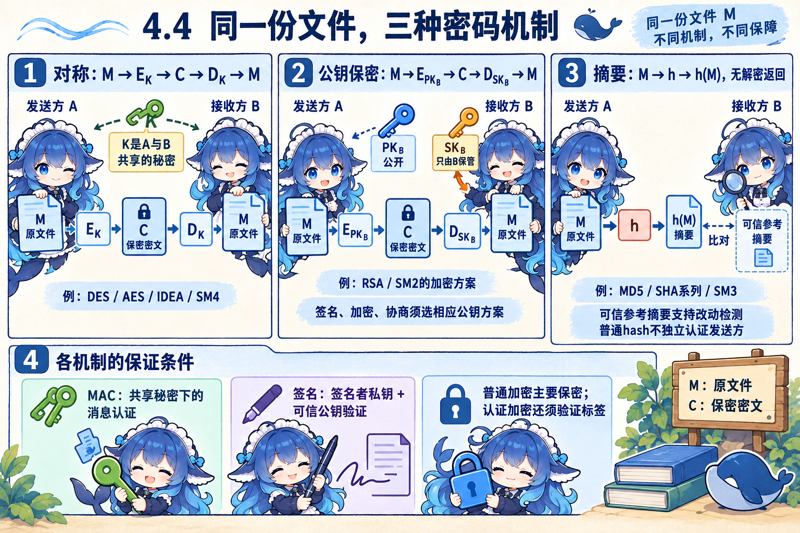
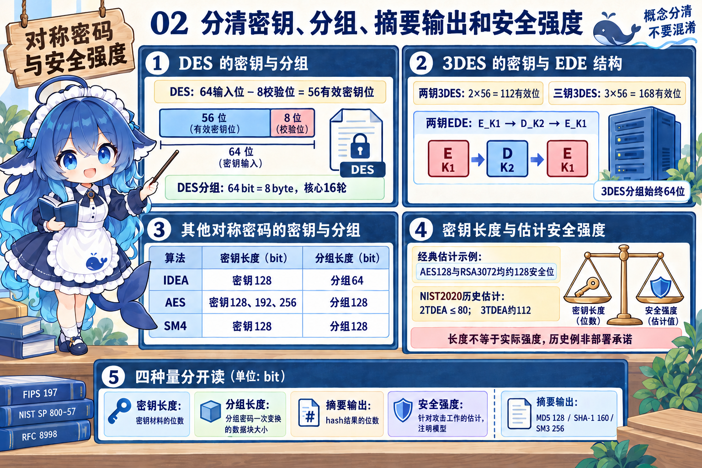
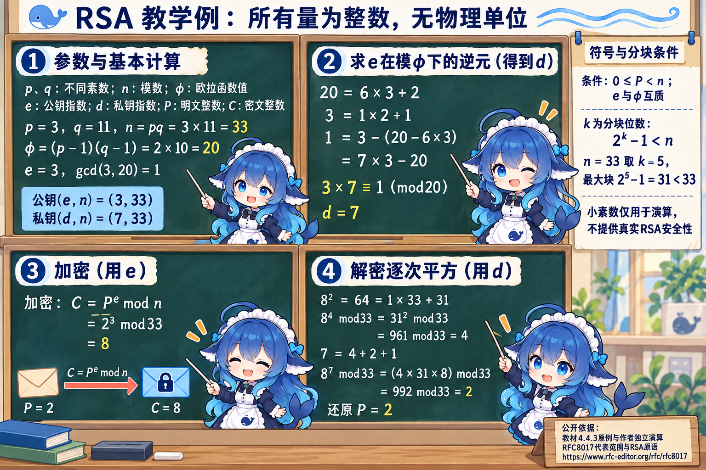
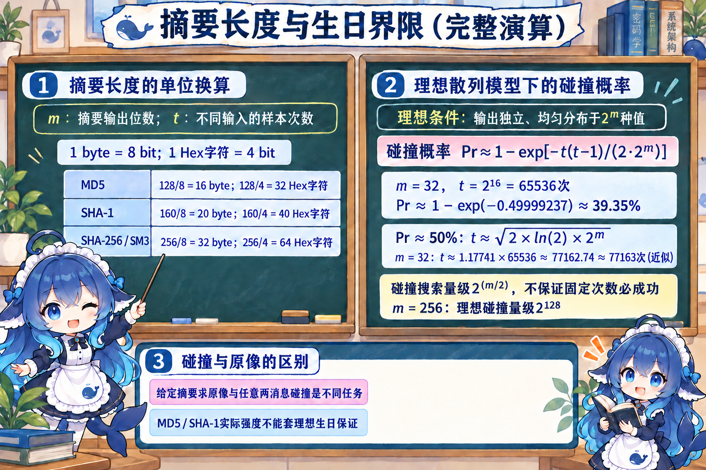
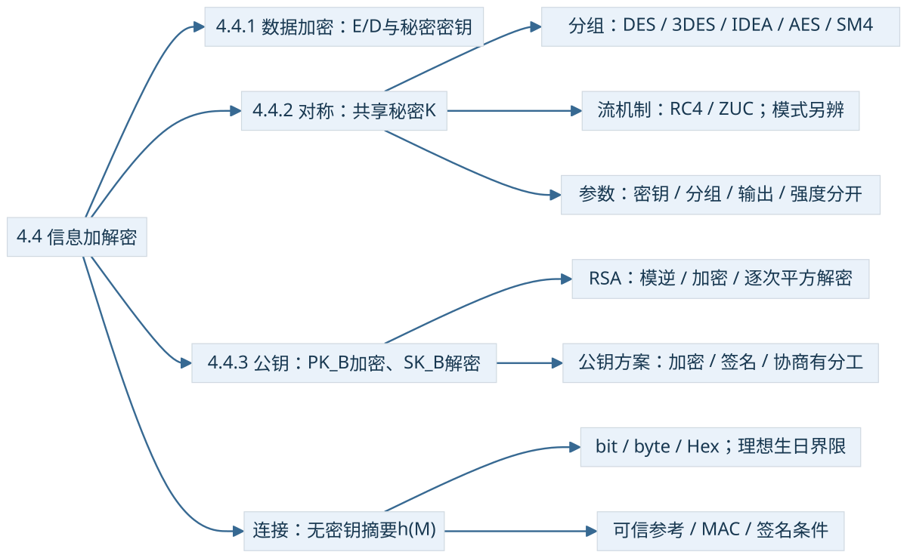

A把一份记录M发给B。A既不希望旁观者读到内容，也希望B辨认改动；有时还需要证明是谁发送。围绕同一份文件，钥匙归谁、输出是什么、接收者怎样检查，决定了使用哪种机制。
4.4.1 明文怎样变成密文，再回来
教材的保密通信模型把明文P、密钥K交给加密算法E，得到密文C=E(K,P)；接收端用相应密钥执行解密D，得到P=D(K,C)。算法可以公开，秘密材料按机制保护。密码编码学设计密码体制，密码分析学研究怎样分析和破译；二者同属密码学。
安全结论还要带模型。无条件安全讨论在不限制算力的条件下，密文仍不足以确定原文；计算安全讨论在规定资源与计算成本下难以破解。常见实际方案主要使用计算安全假设，不能把“算法公开但密钥秘密”单独当成所有条件已经满足的证明。
对称保密用双方共享的秘密K；加解密密钥相同，或在某些表述中能够容易互推。公钥保密用接收方B的公钥PKB加密，B用自己的私钥SKB解密。A无需取得B的私钥，但需要获得可信绑定到B的公钥，后面4.5解释这种绑定。


普通摘要则把M输入散列函数h，产生定长结果h(M)，不提供把摘要解密回原文的功能。若参考摘要可信且受保护，比较能帮助发现改动；如果攻击者可以同时换掉正文和附带摘要，普通hash不能独立确认发送者。短而可预测的输入还可被猜测并逐个比较，不能从“无解密函数”推出输入永远猜不中。
| 机制 | 依赖的条件与直接职责 | 不能单凭它推出的结论 |
|---|---|---|
| 普通hash | 可信参考摘要支持改动检测；算法和任务的安全性质需相应满足 | 独立来源认证、内容保密、抗抵赖 |
| MAC（消息认证码） | 共享密钥保护、算法与验证正确，支持消息完整性和持钥者认证 | 双方都能计算MAC，不能单独提供公开可验证的发送者抗抵赖 |
| 数字签名 | 签名者私钥、可信对应公钥、安全方案与验证；支持来源、完整性及相应抗抵赖证据 | 内容保密、接收者身份或已经收到消息 |
| 保密加密 | 相应钥、方案和参数正确，主要保护机密性；采用认证加密还需验证标签 | 仅有普通保密加密就自动完成来源认证或完整信任验证 |
公钥方案也有分工。RSA与SM2提供相应加密、签名方案；DSA/ECDSA等用于签名，DH/ECDH用于密钥协商，ECC是多种方案的数学基础。教材“私钥加密、公钥解密”的句子和旧题符号可帮助理解RSA式简化关系；讲现代签名时用Sign/Verify接口，不能推广成所有公钥算法都能互换加密和签名。
4.4.2 同为“128位”，可能在数不同东西
分组密码对固定长度的数据块进行变换，流密码按位或字节使用密钥流。DES、3DES、IDEA、AES、SM4属于分组密码，RC4与ZUC等属于流密码例子。处理粒度是分类依据，密钥长、速度和安全强度要另看算法、模式与实现。
DES的有效密钥为56位。输入编码64位中含8个奇偶校验位，不能把这些校验位当成额外秘密。其分组是64位，核心迭代为16轮。IDEA虽然也用64位分组，却用128位密钥。AES三种密钥长度为128、192、256位，分组都为128位；SM4的密钥和分组均为128位。


三重DES的“3”数的是DES运算次数。教材两钥EDE先用K1加密，再用K2解密，最后用K1加密：C=EK1(DK2(EK1(P)))。两把各56位独立有效密钥共112位，三把共168位，分组始终64位。2016下半年上午Q41按两钥口径选112；不能看到“三重”就把分组乘三，也不能把名义密钥位数直接当攻击强度。
密钥长度数密钥材料，分组长度数基本块，摘要输出长度数hash结果，安全强度是对攻击工作量的模型估计。NIST2020的经典估计表把AES-128和RSA3072位模数放在约128安全位的同一档，2TDEA不超过80、3TDEA约112；这些历史/模型数值说明参数不可互换，包含足够密钥熵与算法假设，不是今日部署承诺。依据：SP800-57 Part1 Rev5，表2。
分组密码也不意味着每个模式都必须填充，或错误都按同一种方式扩散。CBC通常需要按约定补齐块；CTR用分组算法产生密钥流再与数据异或，可处理最后的不完整块，不要求这种填充。CTR的同钥计数器必须避免重复，完整性还需相应机制；这里说明模式改变了处理方式，不把CTR写成独立的公钥算法。
4.4.3 把RSA的数字一步算清
RSA的教学例选不同素数p=3、q=11。令n=pq=33，φ(n)=(p−1)(q−1)=20，选与φ互质的公钥指数e=3。私钥指数d是e的模逆，满足ed≡1（mod φ）。此处的P/C都是整数代表，必须在0到n−1之间。小素数只用于算术演示。
模逆、加密、逐次平方解密
逐次平方在每步取余，避免先计算巨大的87。各行都是整数算术，无秒、字节等物理单位。


教材转录写“2k<n”，其中指数不能漏。若k表示明文分块位数，要让全部k位取值都满足P<n，条件是2k−1<n。本例n=33，k=5时最大值31<33；k=6会允许63而不满足条件。教材常见的2k<n写法也能保证本例，根本约束是每个实际代表0≤P<n。这里k是分块位数，不是声称RSA只有5位安全强度。
这套演算解释模数、模逆和互逆原语。实际RSA加密与签名还需要相应完整方案，例如RFC8017分别描述加密与签名方案；不能将此小整数原语直接作为现实安全协议。若能分解n得到p、q，便能计算φ并由公开e求d，解释了旧题把RSA关联到大整数因子分解的考法；实现、方案与假设同样影响安全。
连接：摘要的长度与碰撞不是一回事
以m表示本组摘要输出位数。1字节为8位，一个Hex十六进制字符表示4位，所以摘要原始字节数为m/8，Hex字符数为m/4。MD5为128位，SHA-1为160位，SHA-256与SM3为256位。旧题只写“SHA”且给160位时，应按其SHA-1语境理解，不能把整个SHA系列都归为160位。
当不同输入的可能值多于定长输出空间，碰撞在数学上存在。找任意两条不同消息使h(M1)=h(M2)叫碰撞搜索；给定一个摘要找输入，或给定一条消息找另一个同摘要消息，是不同的原像/第二原像任务。不能用“无解密函数”否认碰撞，也不能用“碰撞存在”推出任何给定原文都能轻易找回。
理想生日模型：为什么约2m/2
只考虑理想独立、均匀的m位输出，并对t条不同输入取样。共有2m种输出，约t(t−1)/2对样本可能相撞。在碰撞概率的常用近似下：
m=256时，理想碰撞搜索为约2128量级；变式m=192则约296。这些不是给定摘要原像搜索的同一公式，也不是MD5、SHA-1实际抗碰撞能力的保证。


MD5与SHA-1的输出规格仍可记，但已有实际碰撞攻击不能被理想长度模型抹去。归档的MD5否定题同时包含“不会出现相同结果”和“MD5可用来加密”两种措辞问题，本册保留题质疑点，不将这个来源争议再计为已证明的个人知识错误。
把算法放回职责与条件
国密连接可用SM2、SM3、SM4分别定位公钥方案、杂凑、对称分组。SM2含不同方案，不能只凭编号推用途；SM1作为题目中的对称候选也不应误选成公钥体系。参数与算法类别分开记，具体规范的作用也要分开。RFC8998是TLS1.3的SM算法使用描述，本文借它核对机制与规格，不把它扩写为所有组织的法定选型。
区块链连接只借一个边界：PoW寻找满足目标条件的摘要，与碰撞搜索不同；签名有助于核对交易提交者，也不证明链外信息本身真实。区块链题源和论文的完整条件将在4.6连接处注明，不把其网站归类改成教材正式目录。


再次拿起M：保密选择合适加密方案，改动检测要有可信参考或认证机制，来源证明要核对钥属与身份绑定。一个输出标着128位，先说明它是在数密钥、分组、摘要还是某种模型下的强度，再进入计算。